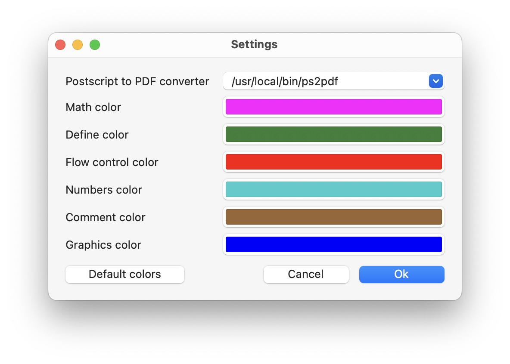

Minimum requirement to run the application is Ventura (macOs 13.0). Unfortunately the prerequisites for Sonoma (macOs 14.0) did change!
The application does not include the Postscript interpreter by itself, but makes use of a tool converting Postscript files into PDF. There are 3 options possible to do this: (The Sandbox does not allow anymore to execute the tool and crashes with "launch path not accessible".)
If you have Xcode installed, the easiest way to get a proper Postscript converter installed is by installing also the Xcode tools. The tools can be downloaded from the Apple developer page at: Command line tools.
You need to click onto the Command line tools and old versions of Xcode line in the Additional downloads section.
Very often the installation of the command line tools is requested by using Xcode and you don't need to do it manually. Remark: The tool will be installed under: /usr/bin/pstopdf in case you want to access it directly.
P.S. It looks as if the latest XCode comand line tools do not contain the pstopdf tool anymore, but if it was installed before probably it remains installed. May be you could succeed by installing a command line tool for Xcode 13.
Please follow the installation process described on Mac Ports site
You need to be in the sudoers list and you should execute
> sudo port install ghostscript
on command line.
Under Homebrew Formulae you find the command on how to install Ghostscript using brew. Similar to above you run:
> brew install ghostscript.
It is absolutely sufficient to have one of them installed. In case that during the first start of the application two or more Postscript converters were found the settings window will be displayed to choose one of them.
Brew and MacPorts are installing the converter under the same path (/usr/local/bin/ps2pdf, also changed under Sonoma). So unless you did some modification to either the MacPorts or the Brew installation the last one installed will overwrite the former. Remark: Brew former times used /usr/local/opt/ps2pdf as installation path.
Staring the program was changed from the initial version to allow entering the converter path even if no converter was found at the typical locations.